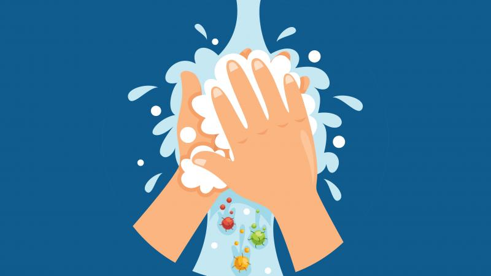
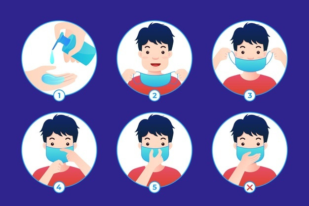
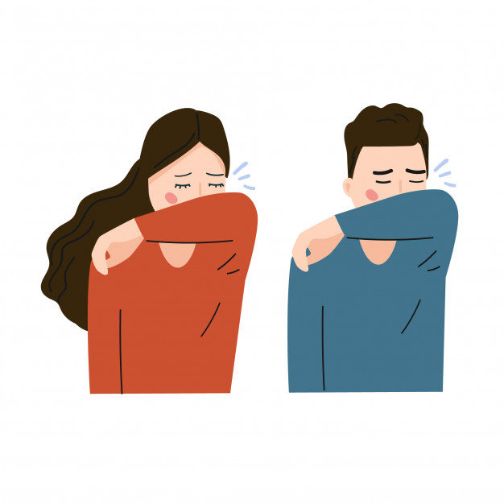
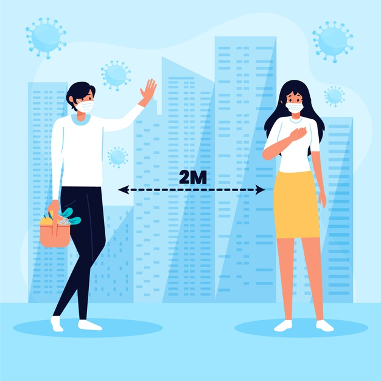
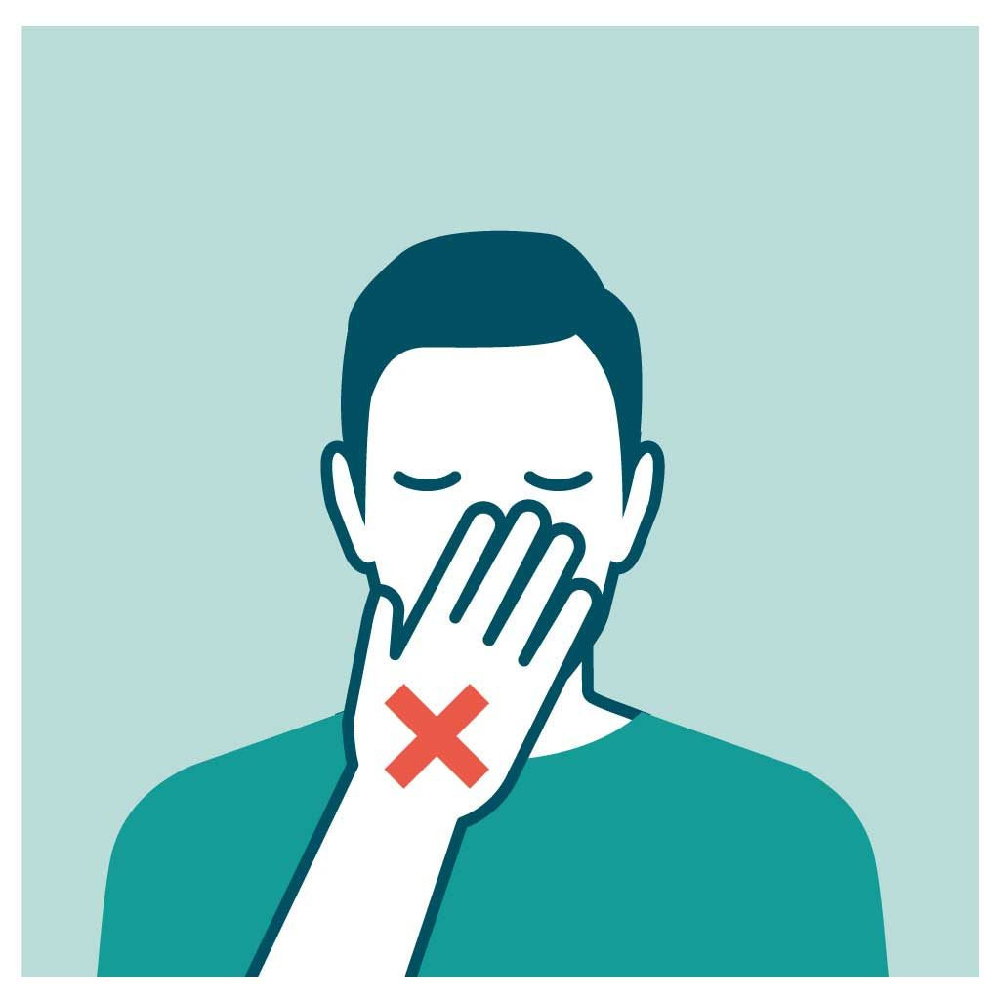
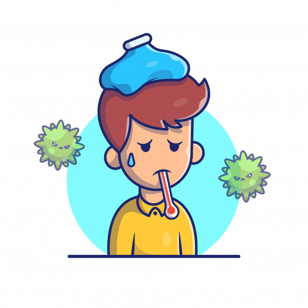
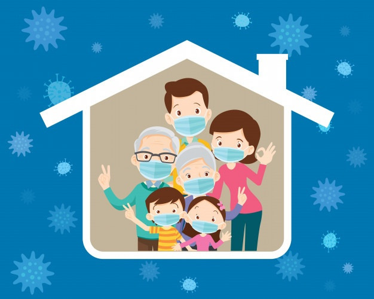

Medidas de protección básicas contra el nuevo coronavirus
Lávese las manos con frecuencia con un desinfectante de manos a base
de alcohol o con agua y jabón.

Usar tapabocas, cambiarlo en cada uso o si es lavable lavarlo
despues de cada uso.

Al toser o estornudar, cúbrase la boca y la nariz con el codo
flexionado o con un pañuelo.

Mantenga el distanciamiento social, al menos 1 metro (3 pies) de
distancia entre usted y las demás personas.

Evite tocarse los ojos, la nariz y la boca.

Si tiene fiebre, tos y dificultad para respirar, solicite atención
médica a tiempo.

Manténgase informado y siga las recomendaciones de los profesionales
sanitarios.
Manténgase informado sobre las últimas novedades en relación con la
COVID-19.
Medidas de protección para las personas que se encuentran en zonas
donde se está propagando la COVID-19 o que las han visitado
recientemente (en los últimos 14 días)

Permanezca en casa si empieza a encontrarse mal, aunque se trate de
síntomas leves como cefalea y rinorrea leve, hasta que se recupere.
